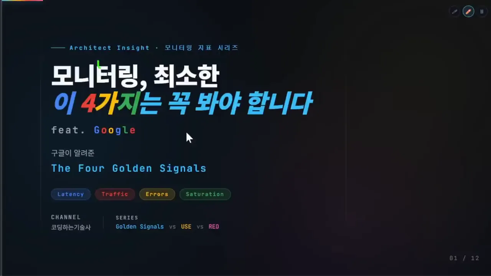
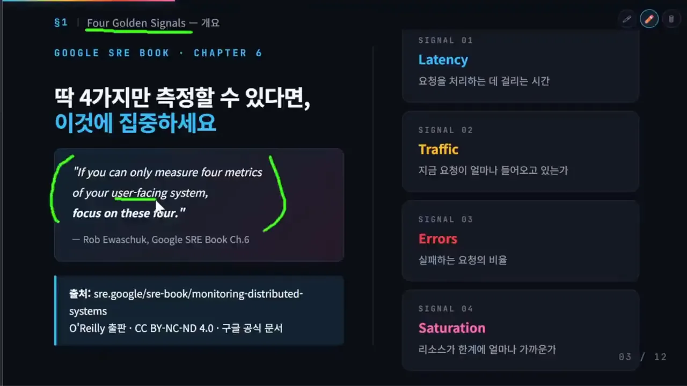
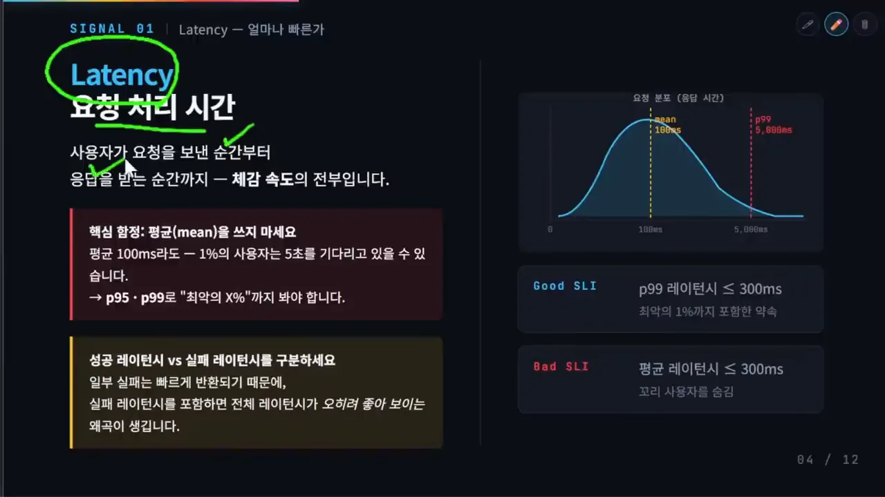
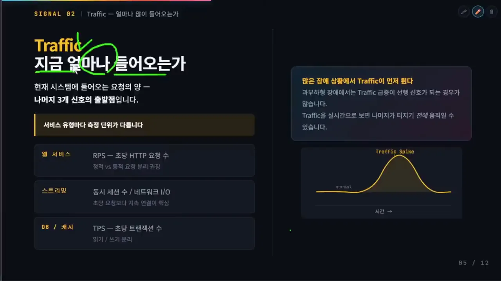
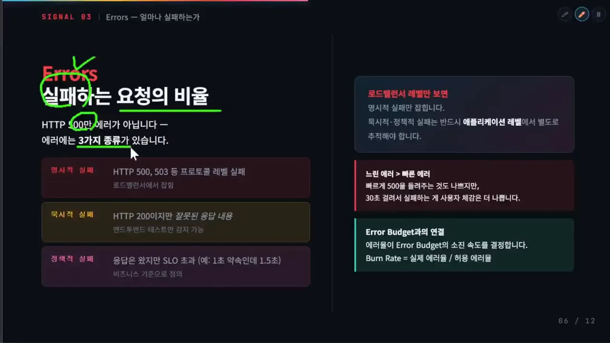
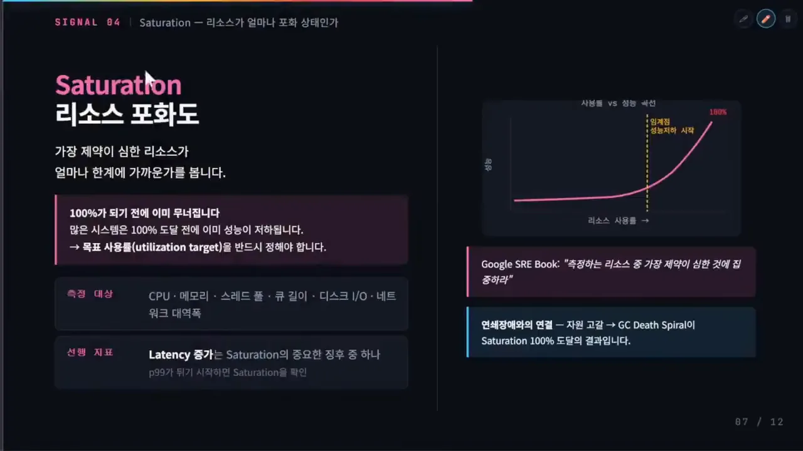
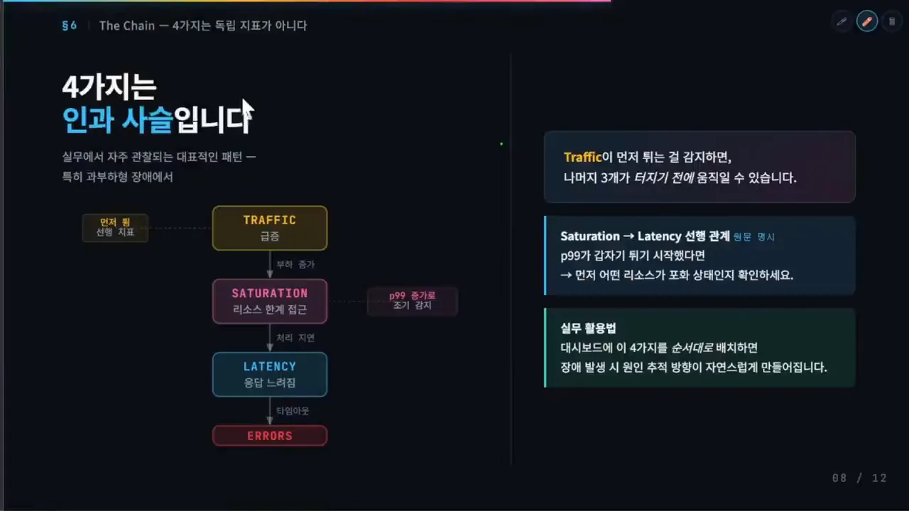
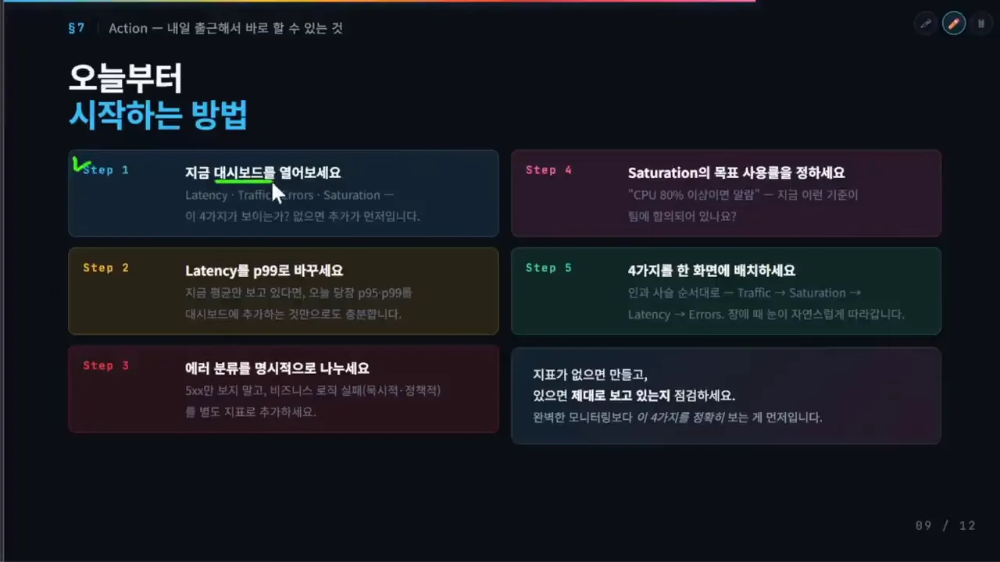
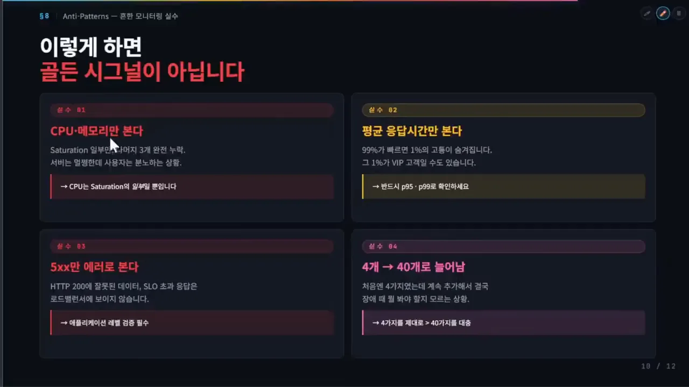
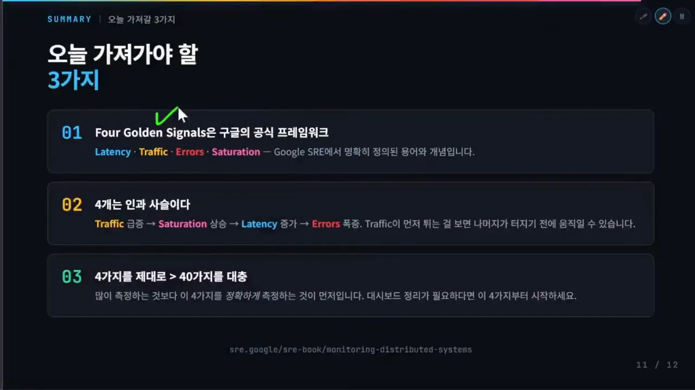

모니터링 프레임워크 세 가지
시스템 모니터링에는 업계가 널리 참고하는 프레임워크가 셋 있어요. 구글 SRE가 정리한 네 가지 골든 시그널, 성능 분야의 권위자 Brendan Gregg의 USE(Utilization, Saturation, Errors) 메서드, Grafana Labs CTO(Chief Technology Officer)인 Tom Wilkie의 RED(Rate, Errors, Duration) 메서드예요. 표지 슬라이드 아래쪽 시리즈 칸에 'Golden Signals vs USE vs RED'가 적혀 있는데, 이 영상은 그중 첫 편이에요. 제목 아래 네 개의 색 태그가 오늘 다룰 지표예요.

셋은 같은 시스템을 다른 자리에서 봐요. 발표자는 한 줄로 이렇게 나눠요.
| 프레임워크 | 만든 곳 | 중심에 두는 것 |
|---|---|---|
| 4 골든 시그널 | 구글 SRE | 사용자 경험과 서비스 품질 |
| RED 메서드 | Tom Wilkie (Grafana Labs) | 요청 기반 서비스 |
| USE 메서드 | Brendan Gregg | 시스템 리소스 |
그래서 셋 중 하나를 고르는 게 아니라 섞어 써요. 발표자가 든 예시는 장애를 좁혀 가는 순서예요. 골든 시그널로 이상 징후를 알아채고, RED로 어느 API(Application Programming Interface)나 서비스에서 문제가 났는지 확인하고, USE로 CPU(Central Processing Unit)·메모리·디스크 I/O 같은 실제 병목 리소스를 찾아요. 말로만 설명한 흐름이라 그림으로 옮겼어요.
네 가지 신호와 레이턴시
구글 SRE 북 6장에는 이 문장이 있어요. 슬라이드 왼쪽 따옴표 상자가 그 원문이고, 오른쪽 네 칸이 네 지표를 한 줄씩 정의해요. 아래 파란 상자에는 출처 주소가 적혀 있어요.

If you can only measure four metrics of your user-facing system, focus on these four.
사용자를 상대하는 시스템에서 지표를 넷만 잴 수 있다면, 이 넷에 집중하세요.
— 구글 SRE 북 6장, 영상 02:14 슬라이드
볼 수 있는 지표는 정말 많아요. CPU, 메모리, 디스크, 네트워크, GC(Garbage Collection), 스레드, 큐, DB(Database) 커넥션 풀, 타임아웃, 응답 시간, 처리량, 동시 요청 수까지요. 그 가운데 먼저 볼 넷이 Latency, Traffic, Errors, Saturation이에요.
Latency — 평균 말고 꼬리를 봐요
레이턴시는 사용자가 요청을 보낸 순간부터 응답을 받을 때까지 걸린 시간, 곧 체감 속도예요. 슬라이드 왼쪽 빨간 상자와 노란 상자가 두 가지 함정이에요. 오른쪽 그래프에서 노란 점선이 평균(mean 100ms), 빨간 점선이 p99(5,000ms)예요. 그 아래 Good SLI(Service Level Indicator)와 Bad SLI 두 칸이 같은 300ms라도 무엇으로 재느냐에 따라 약속의 무게가 다르다는 걸 보여 줘요.

첫 번째 함정은 평균이에요. 평균이 100ms여도 1%의 사용자는 5초를 기다리고 있을 수 있어요. 평균은 이 일부 사용자의 고통을 통째로 가려요. 그래서 P95, P99 같은 테일 레이턴시를 함께 봐요. 전체 요청의 95%나 99%가 몇 초 안에 끝나는지를 보는 거예요. 대규모 분산 시스템에서는 한 요청이 여러 서비스를 부르고, 그중 가장 느린 하나가 전체 응답 시간을 정해요. 그래서 꼬리 문제가 더 커져요.
두 번째 함정은 성공과 실패를 섞는 거예요. 어떤 실패는 아주 빨리 돌아와요. 이걸 전체 레이턴시에 넣으면 실패가 늘수록 응답 시간이 오히려 좋아 보이는 왜곡이 생겨요. 그래서 실패 응답의 레이턴시는 따로 추적해요.
P95를 볼지 P99를 볼지는 시스템 성격과 도메인에 따라 고르면 된다고 해요.
트래픽과 에러
Traffic — 나머지 셋의 출발점
트래픽은 지금 시스템에 들어오는 요청의 양이에요. 슬라이드 왼쪽 세 줄이 서비스 유형별 측정 단위예요. 오른쪽 위 상자는 '많은 장애 상황에서 Traffic이 먼저 뛴다'고 적고, 그 아래 노란 곡선이 트래픽 스파이크를 그려요.

| 서비스 유형 | 트래픽 단위 |
|---|---|
| 웹 서비스 | RPS(Requests Per Second) (초당 HTTP(HyperText Transfer Protocol) 요청 수) |
| 스트리밍 | 동시 세션 수, 네트워크 I/O |
| DB·캐시 | TPS(Transactions Per Second) (초당 트랜잭션 수) |
트래픽이 중요한 이유는 순서에 있어요. 과부하형 장애에서는 트래픽이 다른 세 지표보다 먼저 움직이는 경우가 많아요. 트래픽은 시스템에 들어오는 부하의 시작점이라 나머지에 직접 영향을 주거든요. 스파이크를 실시간으로 먼저 잡으면 레이턴시, 에러율, 세츄레이션이 터지기 전에 손을 쓸 수 있어요. 그래서 발표자는 넷 중 트래픽을 가장 먼저 보라고 해요.
Errors — 실패는 세 종류예요
에러는 전체 요청 중 실패한 요청의 비율이에요. 여기서도 HTTP 500번대만 보면 안 돼요. 슬라이드 왼쪽 세 칸이 구글 SRE가 나눈 에러의 세 종류예요. 오른쪽 위 상자는 '로드밸런서 레벨만 보면 명시적 실패만 잡힌다'고 짚어요.

- 명시적 실패: HTTP 500처럼 프로토콜 수준에서 바로 드러나는 오류예요.
- 묵시적 실패: 응답은 200 성공인데 내용이 틀린 경우예요. 인프라 모니터링만으로는 찾기 어려워서 엔드투엔드 테스트나 애플리케이션 수준 검증이 필요해요. 주문이 실제로 저장됐는지, 결제가 끝났는지까지 확인하는 식이에요.
- 정책적 실패: 응답은 왔지만 SLO를 넘긴 경우예요. 1초 안에 응답하기로 했는데 1.5초가 걸렸다면 결과가 맞아도 목표 기준으로는 실패예요.
결국 에러도 비즈니스 목표를 기준으로 봐야 한다는 얘기예요. 슬라이드 오른쪽 아래 초록 상자는 이 에러율이 에러 버짓을 얼마나 빨리 쓰는지와 이어진다고 적어요. 발표자는 에러 버짓을 다룬 이전 영상을 함께 보라고 해요.
세츄레이션 — 100% 전에 무너져요
세츄레이션은 리소스 포화도예요. 시스템에서 가장 병목이 되는 리소스가 한계에 얼마나 가까워졌는지를 봐요. 슬라이드 오른쪽 그래프가 핵심이에요. 리소스 사용률이 오를 때 성능 곡선이 노란 점선(임계점, 성능 저하 시작)부터 급하게 꺾여 올라가요. 100%에 닿기 한참 전이에요.

많은 시스템이 리소스가 100%가 되기 전에 이미 느려지기 시작해요. 사용률이 높아질수록 대기열이 급격히 길어지기 때문이에요. 그래서 목표 사용률을 미리 정해 두는 게 중요해요. 예를 들어 'CPU 80% 이상이면 위험' 같은 기준을 팀이 미리 합의해 두는 거예요. 이 숫자는 시스템 특성과 워크로드에 따라 달라질 수 있어요.
슬라이드 왼쪽 아래 두 칸이 무엇을 재고 무엇으로 미리 알아채는지를 정리해요.
- 측정 대상: CPU, 메모리, 스레드 풀, 큐 길이, 디스크 I/O, 네트워크 대역폭
- 선행 지표: 레이턴시 증가. P99 같은 꼬리 지연이 갑자기 튀기 시작하면 어떤 리소스가 포화에 가까운지부터 확인해요
오른쪽 분홍 상자의 SRE 북 인용처럼, 여러 리소스 중에서도 가장 제약이 심한 것에 집중해요. 결국 병목을 보라는 뜻이에요.
인과 사슬과 오늘 할 일
네 지표는 서로 독립이 아니에요. 슬라이드 왼쪽 세로 흐름이 과부하형 장애에서 자주 보이는 순서예요. 맨 위 Traffic 상자 옆에는 '먼저 뜀, 선행 지표', Saturation 옆에는 'p99 증가로 조기 감지'라는 꼬리표가 붙어 있고, 화살표마다 부하 증가, 처리 지연, 타임아웃이라는 원인이 적혀 있어요.

트래픽이 급증하면 리소스 포화도가 오르고, 처리가 밀리면서 레이턴시가 늘고, 결국 에러가 터져요. 물론 늘 이 순서는 아니에요. DB 데드락이나 외부 API 장애처럼 트래픽이 그대로인데 에러가 나는 경우도 있어요. 다만 과부하형 장애에서는 이 패턴이 아주 전형적이라고 해요.
그래서 대시보드에 Traffic → Saturation → Latency → Errors 순서로 놓으라고 해요. 장애가 났을 때 눈이 신호를 따라 원인 쪽으로 자연스럽게 움직이기 때문이에요.
내일 바로 점검할 다섯 가지
발표자는 바로 해 볼 일을 다섯 단계로 정리해요. 슬라이드의 Step 1~5가 각각 한 지표나 대시보드 배치를 맡아요. 오른쪽 아래 상자는 '지표가 없으면 만들고, 있으면 제대로 보고 있는지 점검하라'고 맺어요.

- 지금 대시보드를 열어 봐요 — 네 지표가 보이나요? 없으면 추가하고, 잘 안 보이면 앞쪽으로 옮겨요.
- 레이턴시를 P95·P99로 바꿔요 — 평균만 보고 있다면 꼬리 지연을 대시보드에 더하는 것만으로도 충분해요.
- 에러를 나눠요 — 500번대 말고 묵시적·정책적 실패를 별도 지표로 추가해요.
- 세츄레이션의 목표 사용률을 정해요 — 'CPU 80% 이상이면 알림'처럼 팀이 합의한 기준이 있나요?
- 네 지표를 한 화면에 놓아요 — 인과 사슬 순서대로 Traffic, Saturation, Latency, Errors.
이러면 골든 시그널이 아니에요
실무에서 자주 보이는 실수도 네 장의 카드로 짚어요. 카드마다 아래 줄에 고칠 방향이 적혀 있어요.

| 실수 | 무엇을 놓치나요 | 고칠 방향 |
|---|---|---|
| CPU·메모리만 본다 | 서버는 멀쩡한데 사용자는 화가 난 상황 | CPU는 세츄레이션의 일부일 뿐이에요 |
| 평균 응답 시간만 본다 | 느린 1%의 고통 | P95·P99를 같이 봐요 |
| 5xx만 에러로 본다 | 200에 담긴 잘못된 데이터, SLO 초과 | 애플리케이션 수준에서 검증해요 |
| 4개가 40개로 늘어난다 | 장애 때 무엇을 볼지 모름 | 4개를 제대로 보는 게 40개보다 나아요 |
마지막 정리 슬라이드는 세 줄이에요. 골든 시그널은 구글이 공식으로 정리한 네 지표이고, 넷은 인과 사슬로 이어지며, 40개를 대충 보는 것보다 4개를 제대로 보는 게 낫다는 거예요. 트래픽이 먼저 튀는 걸 꼭 보고, 네 지표부터 다진 뒤 점점 늘려 가라고 해요.

측정할 수 없으면 관리할 수 없고 관리할 수 없으면 개선할 수 없다는 말이 있죠.
— 영상 13:22